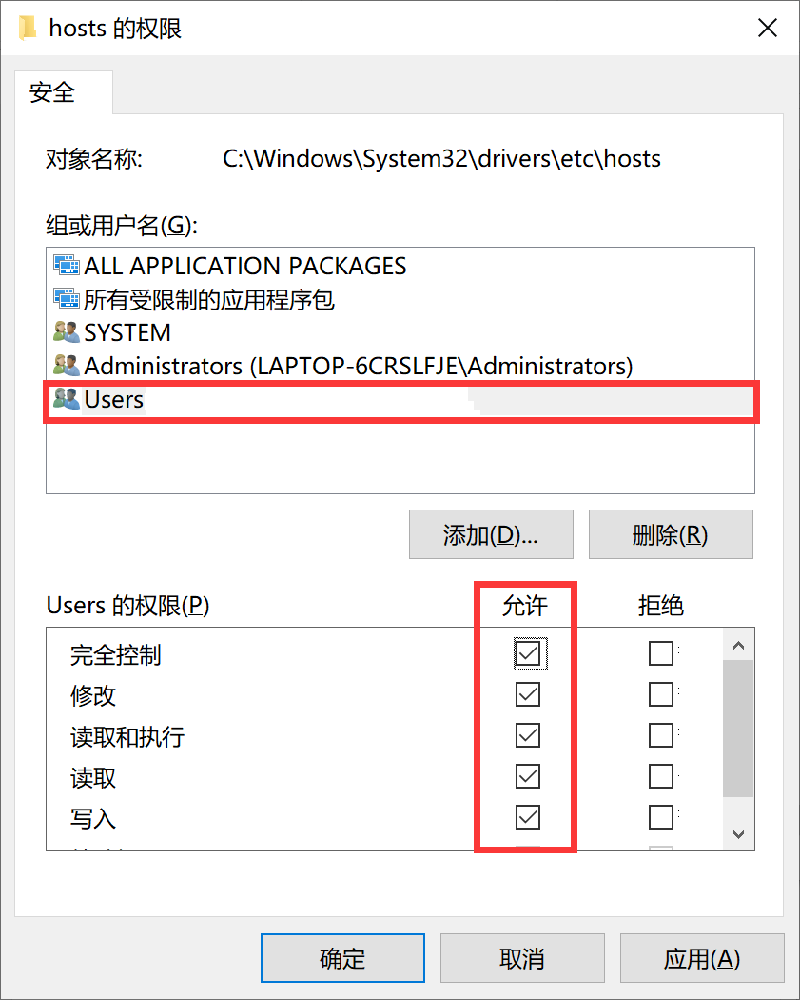

Github无法登陆
问题
最初在使用
git时出现报错，如下1
2
3
4
5
6$ git push -u origin master
ssh: Could not resolve hostname github.com: Temporary failure in name resolution
fatal: Could not read from remote repository.
Please make sure you have the correct access rights
and the repository exists.登陆
github.com，报告404ping github.com，超时
解决
需要在
host文件里做些修改1
C:\Windows\System32\drivers\etc
Win10操作系统，先给自己最高权限【右键-属性-安全-编辑】
在
host文件追加内容1
2
3
4
5
6
7
8192.30.253.113 github.com
192.30.252.131 github.com
185.31.16.185 github.global.ssl.fastly.net
74.125.237.1 dl-ssl.google.com
173.194.127.200 groups.google.com
192.30.252.131 github.com
185.31.16.185 github.global.ssl.fastly.net
74.125.128.95 ajax.googleapis.comping github.com，成功登陆
github.com，成功将
host文件权限恢复
原文作者: 掘金木匠
原文链接: http://goldcarpenter.github.io/2018/12/16/GithububNologin/
版权声明: 转载请注明出处(必须保留作者署名及链接)